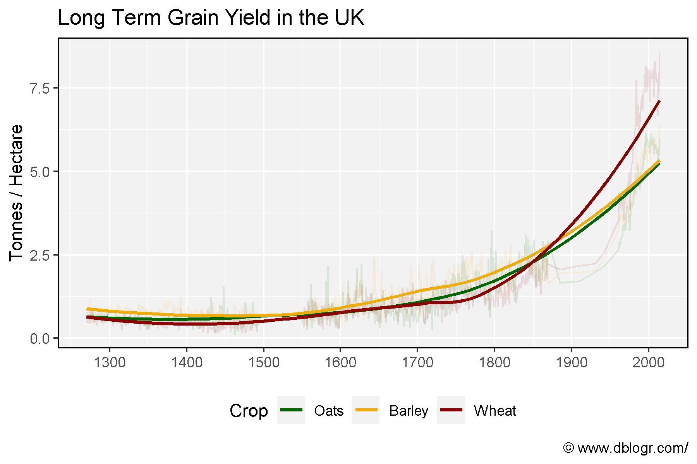

# devtools::install_github("derekmichaelwright/agData")
library(agData) # Loads: tidyverse, ggpubr, ggbeeswarm, ggrepel# Prep data
xx <- agData_UK_Yields
# Plot
mp <- ggplot(xx, aes(x = Year, y = Value, color = Crop)) +
geom_line(alpha = 0.1) +
geom_smooth(method = "loess", se = F) +
scale_x_continuous(breaks = seq(1300, 2000, by = 100)) +
scale_color_manual(values = agData_Colors) +
theme_agData(legend.position = "bottom") +
labs(title = "Long Term Grain Yield in the UK",
y = "Tonnes / Hectare", x = NULL,
caption = "\xa9 www.dblogr.com/")
ggsave("crops_uk_01.png", mp, width = 6, height = 4)
© Derek Michael Wright www.dblogr.com/